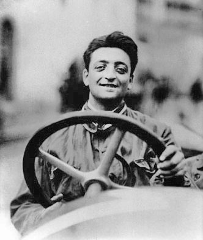
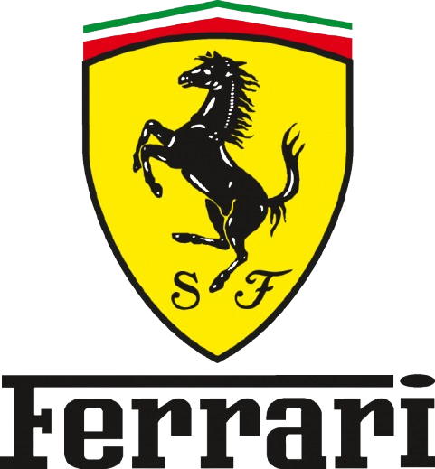
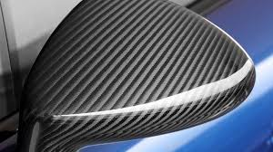
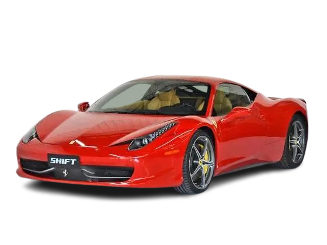
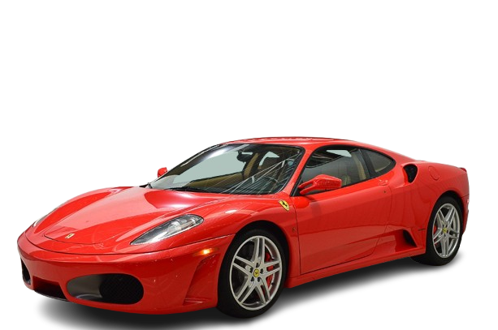
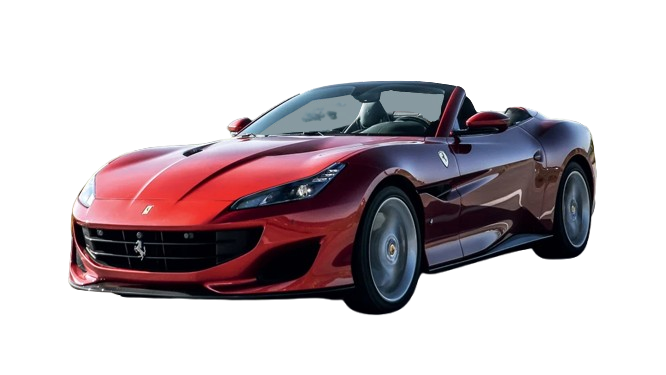

A Ferrari é uma fabricante italiana de carros esportivos de luxo com sede em Maranello. Fundada por Enzo Ferrari em 1939 na divisão de corridas da Alfa Romeo com o nome Auto Avio Costruzioni, a empresa construiu seu primeiro carro em 1940. No entanto, o início da empresa como fabricante de automóveis é geralmente reconhecido em 1947, quando o primeiro carro com o nome Ferrari foi concluído.
História

Exclusividade
A Ferrari é muito mais do que um carro: é um símbolo de exclusividade e luxo. Alguns modelos só são vendidos para clientes selecionados pela marca, reforçando a ideia de que possuir uma Ferrari é fazer parte de um grupo único e restrito.

Tecnologia
A Ferrari está na vanguarda da tecnologia automotiva. Com inovações trazidas diretamente das pistas de Fórmula 1, a marca utiliza materiais como fibra de carbono, motores híbridos de alta performance e sistemas aerodinâmicos inteligentes para garantir velocidade, segurança e eficiência.

Modelos Mais Vendidos
Ferrari 458 Italia
Um dos modelos mais populares da Ferrari, o 458 Italia combina desempenho, design e confiabilidade.

Ferrari F430
O F430 é conhecido pelo equilíbrio perfeito entre esportividade e dirigibilidade, sendo muito vendido no mundo todo.

Ferrari California
Um dos modelos conversíveis mais vendidos da Ferrari, a California conquistou o mercado pelo seu estilo elegante e desempenho impressionante.
